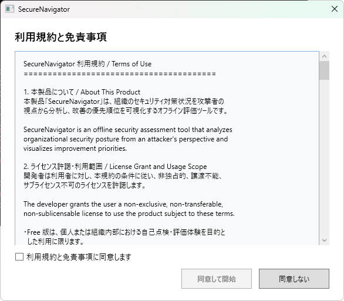

Chapter 1: はじめに
インストール・初回起動・利用規約の同意
動作要件
| 項目 | 要件 |
|---|---|
| OS | Windows 10 Version 2004 以降 / Windows 11 |
| ランタイム | WebView2 Runtime（PDF 出力に必要。通常は OS に同梱済み） |
| ディスク容量 | 約 50 MB |
| インターネット | 不要（完全オフライン動作） |
SecureNavigator は完全オフラインで動作します。インターネット接続が必要になるのは、Microsoft Store からのインストール・更新時のみです。
インストール方法
SecureNavigator は Microsoft Store からインストールします。
- Microsoft Store を開き、「SecureNavigator」を検索します。
- 「入手」ボタンをクリックしてインストールします。
- インストール完了後、スタートメニューから「SecureNavigator」を起動できます。
初回起動と利用規約
SecureNavigator を初めて起動すると、利用規約と免責事項の同意画面が表示されます。
- 利用規約の内容を最後までスクロールして確認します。
- 「同意する」ボタンをクリックすると、メイン画面（ホーム画面）に進みます。
- 「同意しない」を選択した場合、アプリは終了します。
利用規約の内容が更新された場合は、次回起動時に再度同意を求められます。

画面構成の概要
SecureNavigator は左側のナビゲーションバーから主要な画面を切り替えます。
| 画面 | 説明 |
|---|---|
| ホーム | 診断の新規作成や既存セッションの再開ができます。 |
| ヒアリング | セキュリティ対策に関する質問に回答する画面です。 |
| 結果 | 診断結果のサマリ、攻撃シナリオ、改善ロードマップ、フレームワーク適合状況を確認できます。 |
| 攻撃ビュー | 各攻撃シナリオの詳細と ATT&CK テクニックとの対応を確認できます。 |
| レポート | レポートのプレビューと PDF 出力（Pro のみ）ができます。 |
| 設定 | 言語の切替、ライセンス管理、外部リンクの表示を行います。 |

Chapter 1: Getting Started
Installation, first launch, and terms acceptance
System Requirements
| Item | Requirement |
|---|---|
| OS | Windows 10 Version 2004 or later / Windows 11 |
| Runtime | WebView2 Runtime (required for PDF export; usually included with the OS) |
| Disk Space | Approximately 50 MB |
| Internet | Not required (fully offline operation) |
SecureNavigator operates entirely offline. An internet connection is only needed when installing or updating through the Microsoft Store.
Installation
SecureNavigator is installed from the Microsoft Store.
- Open the Microsoft Store and search for "SecureNavigator".
- Click "Get" to install the application.
- After installation, launch "SecureNavigator" from the Start menu.
First Launch and Terms Acceptance
When you launch SecureNavigator for the first time, the Terms of Use and Disclaimer acceptance screen is displayed.
- Scroll through the terms to review the full content.
- Click "Accept" to proceed to the main screen (Home).
- If you select "Decline", the application will close.
If the terms are updated in a future release, you will be asked to accept them again on the next launch.

Screen Overview
SecureNavigator uses a navigation bar on the left side to switch between the main screens.
| Screen | Description |
|---|---|
| Home | Create a new assessment or resume an existing session. |
| Hearing | Answer questions about your organization's security controls. |
| Results | View the result summary, attack scenarios, improvement roadmap, and framework compliance. |
| Attack View | Explore each attack scenario in detail with ATT&CK technique mappings. |
| Report | Preview reports and export to PDF (Pro only). |
| Settings | Switch language, manage license, and access external links. |